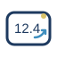
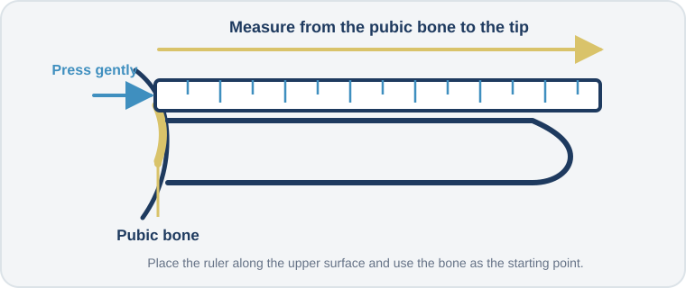

Why Measurement Methodology Matters
This report compares your measurements with published scientific reference data. Meaningful comparisons require a consistent measurement method.
Small differences in technique can influence the recorded value. The instructions below are designed to make your measurements as accurate, reproducible, and comparable as reasonably possible.
Use measurements taken specifically for this report.
Use decimals when appropriate rather than excessive rounding.
Take the measurement again if the first result seems unclear.
Use the bone-pressed method for every length measurement.
Practical Notes
Measuring Tools
A rigid ruler for length measurements and a flexible measuring tape for circumference measurements are sufficient.
No Flexible Tape?
Use a non-stretch string, ribbon, or strip of paper. Mark the overlap and measure it with a ruler. Do not use elastic material.

Rounding
Small decimal values are acceptable and may improve accuracy.
Precision
Reasonable accuracy and consistency matter more than absolute perfection.
Repeat Measurements
If you are uncertain, repeat the measurement and use the average value.
Units
The questionnaire will support both centimetres and inches and display both in the final report.
Understanding the Bone-Pressed Method
The bone-pressed method uses the pubic bone as the anatomical starting point for length measurements.

Place a rigid ruler along the upper side of the penis. Gently press the base of the ruler inward until it reaches the pubic bone, then measure to the tip of the glans.
Flaccid Measurements
These measurements are taken while the penis is not erect.
Flaccid Length
Measure along the upper side from the pubic bone to the tip of the glans using the bone-pressed method.
Stretched Flaccid Length
While flaccid, gently stretch the penis forward to its maximum comfortable extension. Measure along the upper side using the bone-pressed method.
Flaccid Girth
Measure the circumference at the midpoint of the shaft using a flexible measuring tape or a non-stretch substitute.
Erect Measurements
These measurements are taken during a full erection.
Erect Length
Measure along the upper side from the pubic bone to the tip of the glans using the bone-pressed method.
Erect Girth
Measure the circumference at the midpoint of the shaft during a full erection.
Measurement Confidence
How confident are you that the measurements were taken correctly?